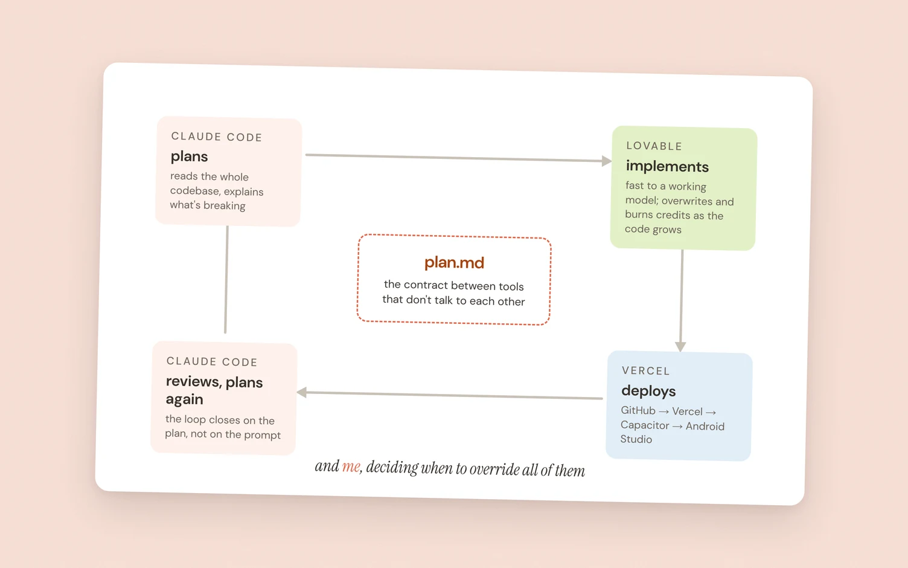

Khana kya banaun?
"What should I cook?" is the question every Indian household asks around six in the evening. MyFood answers it: a day's meals balanced by food group, the recipe for each, and one place for the links I save from YouTube and Instagram. I designed it, built it and shipped it alone. It's live in Play Store Early Access.
- Role
- Everything: concept, design, code, release
- When
- Mar – May 2026
- Status
- Play Store Early Access · myfoodapp.xyz
- Built with
- Claude Code, Lovable, Vercel, Capacitor, Android Studio
01Food groups, not calories
The nutrition apps I'd used treat food as arithmetic: calories in, calories out, a number to chase. That isn't how anyone cooks. A household cooks by balance: a grain, a dal, a vegetable, something from dairy, and the rest follows. So MyFood counts food groups instead of calories. The home screen answers the question at a glance: today's balance out of nine groups, the day's three meals, and a recipe behind each one.

02Recipes, and the videos people actually cook from
A recipe here is the dish plus the way people really learn it. Each one carries its serving size, the calories and macros per serving, and a rail of videos for that dish, because nobody in my family has cooked from a text recipe in years. The recipe list filters by what you're after (high protein, low calorie, my own), and saving a link from YouTube or Instagram files it under the dish. That's the "my" in MyFood: the plan is generated, but the recipes are yours.

03I didn't learn to code. I learned to orchestrate.
ChatGPT gave me the roadmap: connect GitHub, deploy on Vercel, set up Capacitor, build in Android Studio. Good for direction, not much use when things broke. Lovable got a rough working model up in two hours; as the codebase grew it overwrote changes, burned credits and struggled to debug. Claude Code could read the whole codebase and explain why things were breaking.
No single tool could build the app. The loop that could: Claude plans, Lovable implements, Vercel deploys, Claude reviews and plans again. The glue was a planning doc, one .md file that became the contract between tools that don't talk to each other. It's the same idea I now run at OverseeAI, where the design system's DESIGN.md and tokens are the spec that coding agents build to. I learned it here first, on a meal planner.

04The eggs
At one point the planner was recommending eggs three times a day, for everyone. Technically correct: it was optimising for B12 in a vegetarian-leaning diet. Completely useless as a product. No prompt fixes that. A product decision does.
The real skill wasn't prompting. It wasn't debugging. It was knowing when to override all of them with a product decision.
That doesn't change when the code is generated. The model was right and the product was wrong, and someone has to know the difference.
05Where it is
The app is live on the Play Store in Early Access, and the web build is at myfoodapp.xyz. The build story is on LinkedIn, where it started.
And the question that started it all? App toh ban gayi. Now I just send the links to my cook.